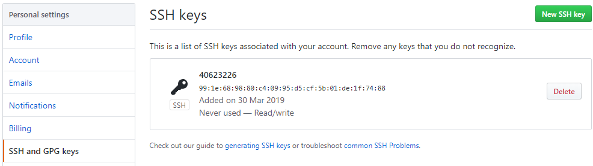
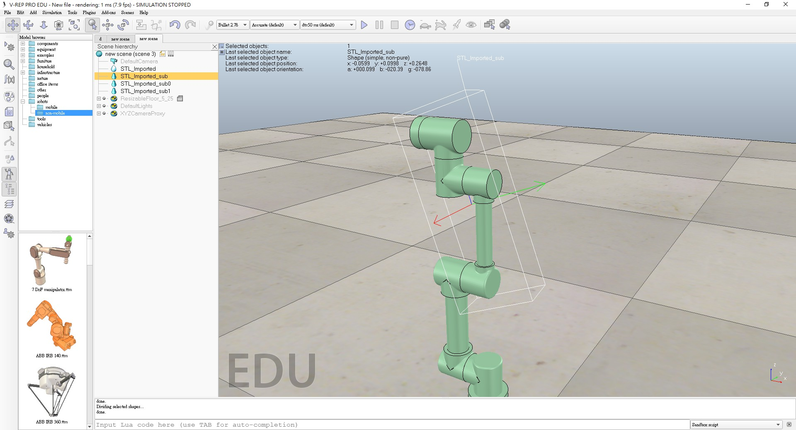
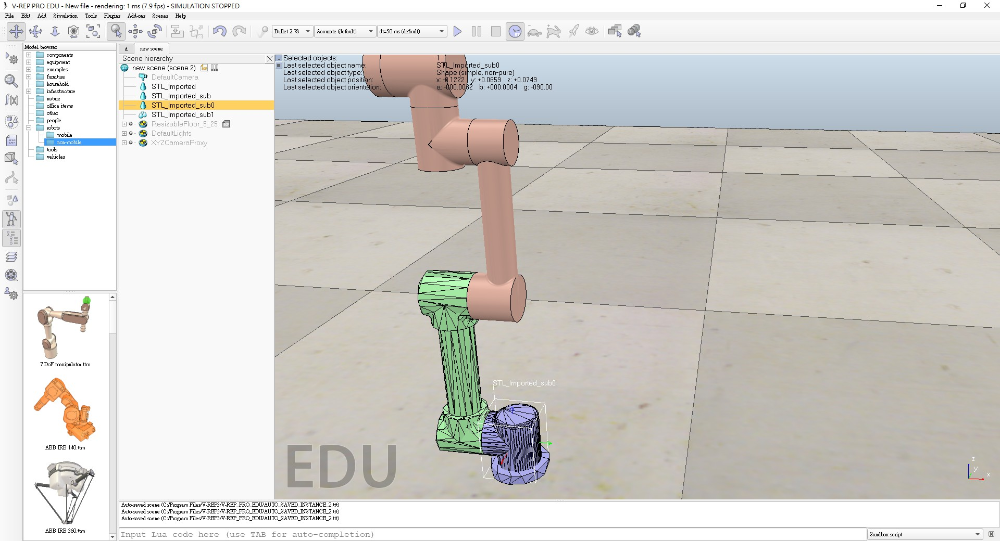
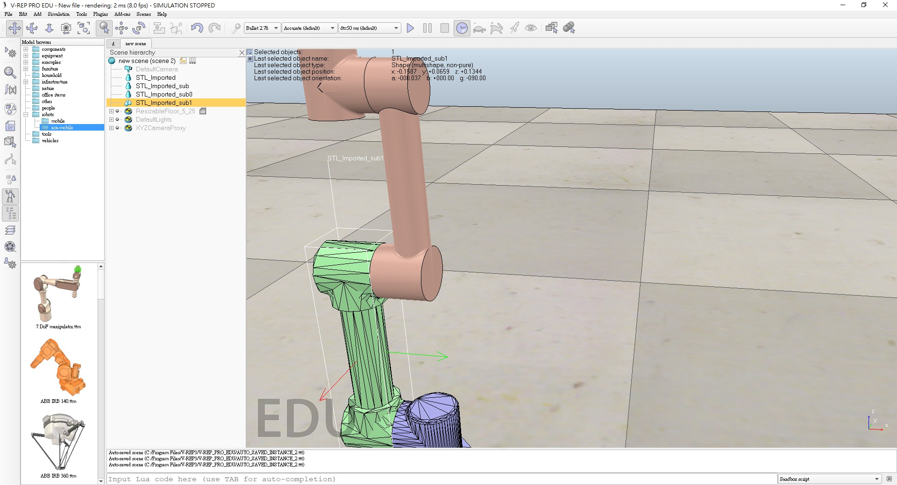
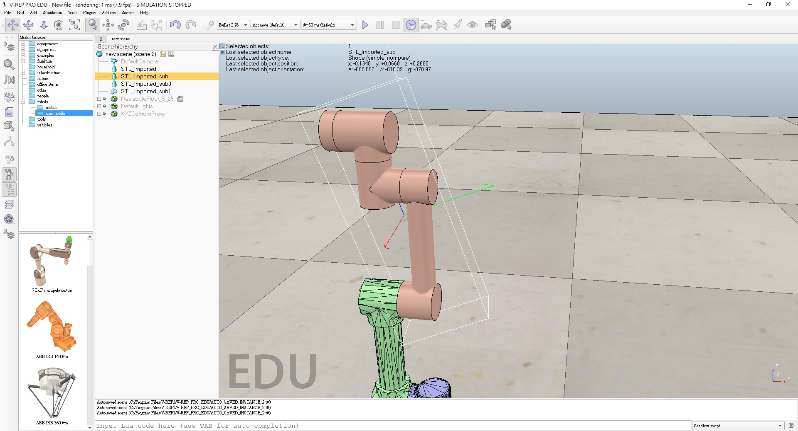
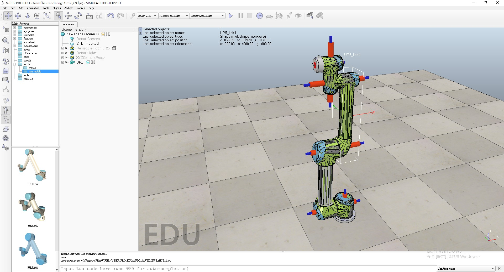
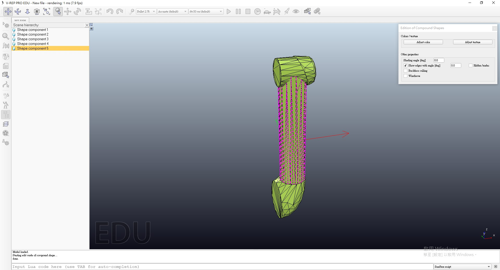
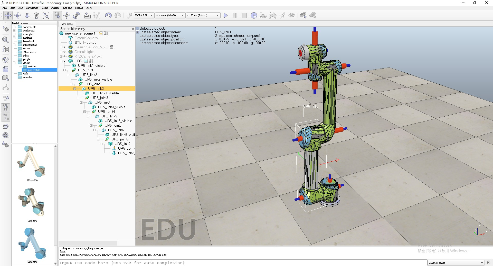
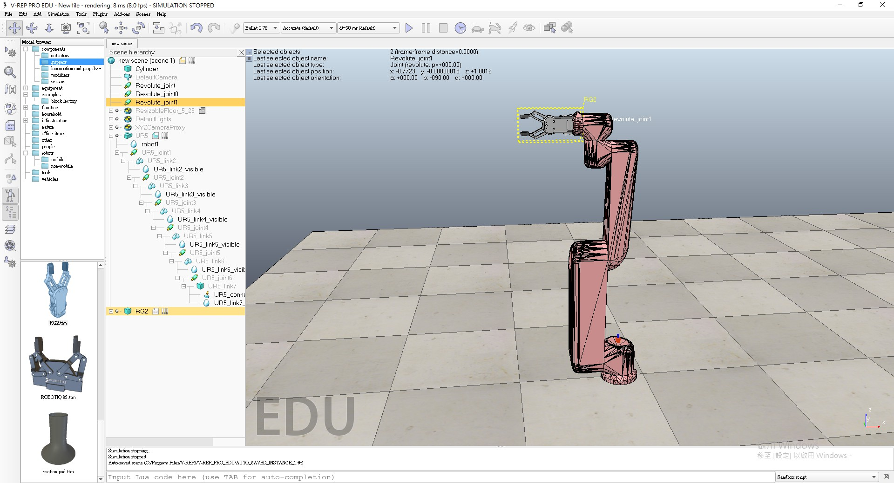

40623225-Week << Previous Next >> 40623227-Week
40623225-Week << Previous Next >> 40623227-Week
40623226-Week
Week4:
設定個人ssh，並利用ssh git clone自己這組倉儲到隨身碟，建立ungit進行倉儲更新


Week5:
了解V-rep 並和組員討論手足球過程產生的問題
Week6:
這週完成V-rep模擬

Week8:

一開始從Onshape上匯下來的圖檔，導入模組後，發現部分零件被合併無法被拆開，無法解決問題，最後只能從別的地方下手。

這裡先做底部的動態建模，先生成網格之後再進行三角形編輯模式編輯。

↓無法解決部分

因為自己畫的圖會發生問題，所以後面用內建模組來設計，還有很多功能不了解，
只做了一部分的東西。

綠色部分利用shape edit模式 ，對該部分網格進行合成為圓柱狀，並建立關節

圓柱銀色部分為刪除網格的地方

↓最後做到這裡，還有一部份功能不太會使用

Week10:
Week11:
Week12:
Week13:
Week14:
Week15:
Week16:
Week17:
40623225-Week << Previous Next >> 40623227-Week